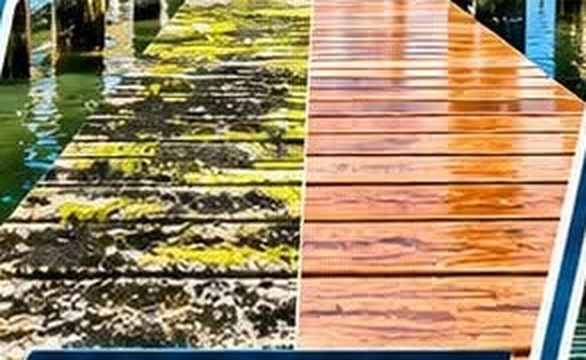
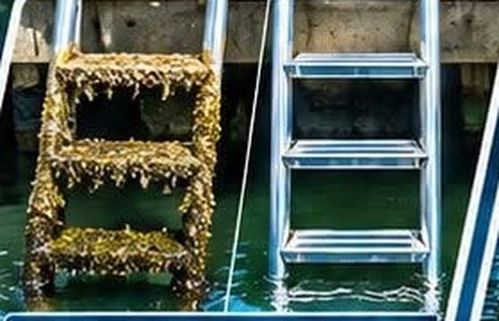

Waterfront Home Maintenance Blog
Straight answers for Tampa Bay waterfront homeowners on keeping docks, seawalls, pilings and lifts clean, safe and built to last.

How Often Should You Clean Your Dock in Tampa Bay?
A practical cleaning schedule for docks, seawalls, pilings and lifts in Pinellas, Hillsborough and Manatee counties, based on shade, water flow and use.
Read article
Barnacles vs. Oysters: What Is Growing on Your Seawall?
Learn the difference between barnacles, oysters, algae and other marine growth on Tampa Bay seawalls and docks, and why each one matters.
Read article7 Warning Signs Your Seawall Needs Attention
Cracks, sinkholes, leaning caps and more. The warning signs of seawall problems Tampa Bay waterfront homeowners should watch for, and why cleaning helps you see them.
Read article
Are Piling Wraps Worth It for Tampa Bay Docks?
What piling wraps do, how they protect wood pilings from marine borers and rot, and when they make sense for waterfront homes in Pinellas, Hillsborough and Manatee.
Read article
Hurricane Season Dock and Seawall Prep Checklist for Tampa Bay
A step by step hurricane prep checklist for docks, seawalls, pilings and boat lifts in Pinellas, Hillsborough and Manatee counties.
Read articleAfter the Storm: Dock and Seawall Checklist for Waterfront Homes
What to check on your dock, seawall, pilings and boat lift after a hurricane or tropical storm in Tampa Bay, and how to stay safe while you do it.
Read articleHow Barnacles Damage Your Boat Lift and Your Boat
Marine growth on boat lifts wears out cables, scratches hulls and strains motors. Here is what Tampa Bay boat owners should know about lift maintenance.
Read article
How to Make Your Dock Ladder Safe for Kids and Guests
Barnacle covered dock ladders cause cuts and falls. Simple ways Tampa Bay waterfront families can keep ladders and swim areas safe.
Read articleSelling a Waterfront Home? Clean the Dock and Seawall First
Why a clean dock and seawall help waterfront homes in St. Petersburg, Tampa and Bradenton show better, inspect cleaner and sell with fewer surprises.
Read articleWood vs. Composite Docks: Maintenance in Florida Salt Water
How wood and composite docks hold up in Tampa Bay salt water, what kind of cleaning each needs and how to keep either one looking good.
Read article
Marine Borers and Piling Rot: What Tampa Bay Homeowners Should Know
How marine borers and rot weaken wood dock pilings in Tampa Bay, warning signs to look for and how cleaning and wraps help protect your dock.
Read articleDock and Seawall Care for Vacation Rentals and Seasonal Homes
How vacation rental owners and seasonal residents on Anna Maria Island, St. Pete Beach and Tampa Bay keep docks safe and guest ready year round.
Read articleSeawall Maintenance for Canal Communities and HOAs
A guide for HOAs and canal neighborhoods in Apollo Beach, Ruskin, Shore Acres and Bradenton on keeping shared and private seawalls clean and inspected.
Read articleBuying a Waterfront Home? What to Check on the Dock and Seawall
A buyer checklist for docks, seawalls, pilings and boat lifts on Tampa Bay waterfront homes, and why a cleaning can reveal what inspections miss.
Read articleWhy Marine Growth Explodes in Summer in Tampa Bay
How water temperature and seasons affect barnacle, oyster and algae growth on Tampa Bay docks and seawalls, and how to time your cleanings.
Read articleDIY vs. Professional Dock and Seawall Cleaning
The real risks of DIY dock and seawall cleaning in Tampa Bay, from damaged boards and injuries to chemical runoff, and when to call a pro.
Read articleFree Video Inspection
Text a short video or a few photos of your dock, seawall, pilings or lift. We send back a recommendation and price, usually the same day.